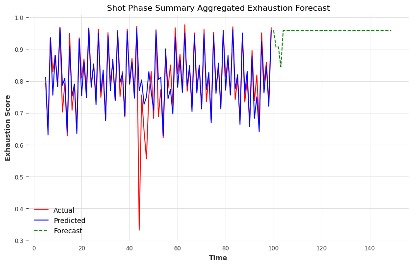
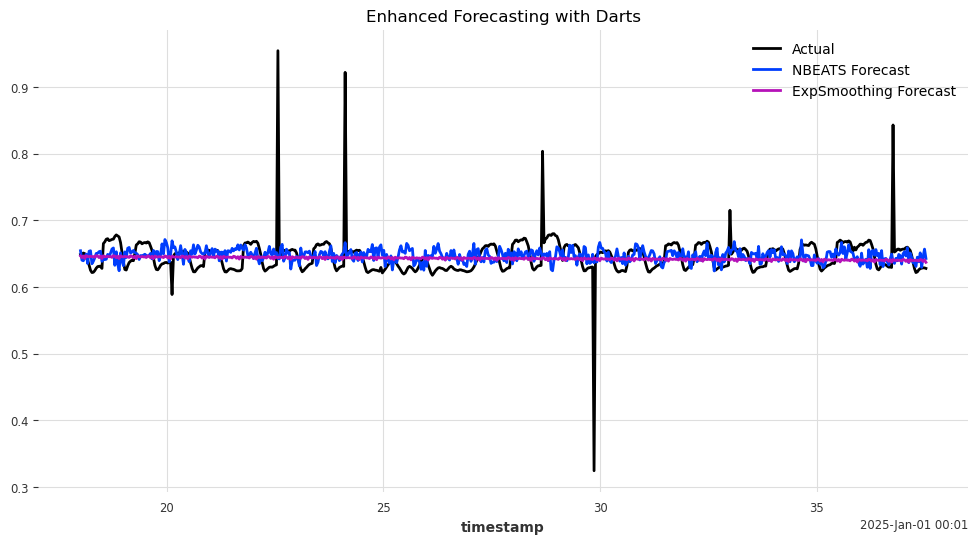
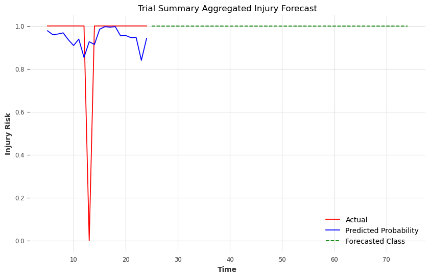

Capstone Project: Modeling Fatigue and Injury Risk in Athletic Movements like Basketball Shooting
Introduction
Fatigue and injury risk modeling are essential components of modern sports analytics, especially for basketball athletes. Accurately predicting fatigue levels and injury risks can significantly optimize training, enhance performance, and prolong athlete careers. Long Short-Term Memory (LSTM) networks—a specialized type of Recurrent Neural Network (RNN)—are well-suited to capturing sequential and temporal patterns inherent in physiological and biomechanical athlete data.
Recent studies underline the critical link between fatigue accumulation and increased injury risk, emphasizing the need for precise temporal modeling. This capstone project employs LSTM models to forecast fatigue levels (exhaustion_rate) and classify joint injury risks (injury_risk) during basketball shooting trials. The goal is to support injury prevention strategies and optimize athletic performance using biomechanical and physiological insights.
In looking on a granular level we found that shooting motion sequences are of different lengths if we wanted to try and assess real time granular metrics, we can possibly forecast injury’s as high as 2 sequences in the future so I evaluated hieararchical dynamic time warping, distributed padding, and the basic set_window approach to setting up the sequences to see which would be best in terms of forecasting in the near future and the results are below.
Key literature informing this approach:
- Athlete Burnout: Individualized factors (stress, training load, recovery support) significantly influence injury risks, suggesting the need for personalized interventions.
- Fatigue Data Collection: Datasets capturing muscle activity, biomechanics, and physiological fatigue indicators serve as foundational resources.
- Methodological Advances:
- Fatigue modeling using neural networks: DOI: 10.1016/j.engfracmech.2020.107402
- Injury risk forecasting via combined metrics: DOI: 10.52082/jssm.2024.537
- Fatigue modeling using neural networks: DOI: 10.1016/j.engfracmech.2020.107402
| # Methods |
|---|
| # Modeling and Results |
| ### LSTM-Based Architectures |
| We explored several variations of LSTM-based architectures to capture temporal dependencies in the biomechanical and physiological data: |
| 1. Standard LSTM - Architecture: LSTM(64) → Dropout(0.2) → LSTM(32) → Dropout(0.2) → Dense(horizon) - Usage: - Sequential data with clear forward temporal dependencies - Real-time predictions where future context isn’t available - Basic motion pattern recognition in joint movements - Pros: - Computationally efficient - Lower memory requirements - Easier to train and tune - Good for online/streaming predictions - Cons: - Can miss patterns that require future context - May struggle with complex temporal relationships - Limited ability to capture long-range dependencies |
| 2. Bidirectional LSTM (BiLSTM) - Architecture: BiLSTM(64) → Dropout(0.2) → BiLSTM(32) → Dropout(0.2) → Dense(horizon) - Usage: - Post-hoc analysis of complete movement sequences - Pattern recognition requiring both past and future context - Identifying complex biomechanical relationships - Pros: - Better pattern recognition through bidirectional context - Improved accuracy for complex sequences - Better at capturing long-term dependencies - Cons: - Double the computational cost - Cannot be used for real-time predictions - Requires full sequences for prediction - More prone to overfitting on small datasets |
| 3. TCN-LSTM Hybrid - Architecture: TCN(64) → Dropout(0.2) → LSTM(32) → Dropout(0.2) → Dense(horizon) - Usage: - Data with both local and global temporal patterns - Scenarios requiring precise temporal hierarchy - Complex motion sequences with varying time scales - Pros: - Better at capturing multi-scale temporal patterns - Parallel processing capabilities - More stable gradients - Fixed receptive field helps with interpretability - Cons: - More hyperparameters to tune - Higher computational complexity - May require larger datasets for effective training - Can be overkill for simple temporal patterns |
| 4. TCN-BiLSTM Hybrid - Architecture: BiTCN(64) → Dropout(0.2) → BiLSTM(32) → Dropout(0.2) → Dense(horizon) - Usage: - Complex biomechanical sequences requiring multi-scale analysis - High-precision movement analysis - Research scenarios where maximum model capacity is needed - Pros: - Highest model capacity - Best at capturing complex temporal relationships - Combines benefits of all previous architectures - Superior performance on complex patterns - Cons: - Highest computational cost - Most complex to tune - Requires largest datasets - Highest risk of overfitting - Longest training time |
| Common Parameters Across All Architectures: - Optimizer: Adam - Loss Function: MSE - Metrics: MAE - Batch Size: 32 - Initial Epochs: 10 |
| Selection Criteria: - Dataset Size: Simpler architectures for smaller datasets - Computational Resources: Standard LSTM for limited resources - Prediction Requirements: BiLSTM variants only for offline analysis - Pattern Complexity: More complex architectures for intricate temporal patterns - Real-time Needs: Standard LSTM or TCN-LSTM for online predictions |
| Core LSTM Mathematics: - Forget Gate: \[f_t = \sigma(W_f \cdot [h_{t-1}, x_t] + b_f)\] |
| - Input Gate: \[i_t = \sigma(W_i \cdot [h_{t-1}, x_t] + b_i)\] \[\tilde{C}_t = \tanh(W_C \cdot [h_{t-1}, x_t] + b_C)\] |
| - Cell State Update: \[C_t = f_t \odot C_{t-1} + i_t \odot \tilde{C}_t\] |
| - Output Gate: \[o_t = \sigma(W_o \cdot [h_{t-1}, x_t] + b_o)\] \[h_t = o_t \odot \tanh(C_t)\] |
| Where ( W ) and ( b ) represent weights and biases, ( ) is the sigmoid function, and ( ) denotes element-wise multiplication. |
| ### Preprocessing Approaches |
| - Clipped physiological metrics (joint_exhaustion_rates) with minimum of 0 - Scaling numerical features - filtering low null columns and imputing higher volume nulls - checked z-score for suspicious variables |
- Evaluating optimal sequence handling via: - Dynamic Time Warping (DTW) - Padding sequences - Windowing methods (set_window) |
| ### Model Results Findings |
| ### Model Performance Summary |
| ### Training Parameters: - Epochs - 200 - Batch Size = 32 - Early Stopping Patience = 5 - lstm layers = 1 - dense_units = 1 - dropout = 0.2 |
| ### Base Models | Model Type | MSE | MAE | R² Score | Accuracy | Precision | Recall | F1 Score | |————|—–|—–|———-|———-|———–|——–|———–| | Exhaustion Model (Base) | 0.008768 | 0.043824 | 0.7046 | - | - | - | - | | Exhaustion Model (Trial Agg.) | 0.006269 | 0.038587 | -0.0895 | - | - | - | - | | Exhaustion Model (Shot Agg.) | 0.003367 | 0.028238 | 0.7340 | - | - | - | - | | Injury Model (Base) | - | - | - | 0.889 | 0.831 | 0.789 | 0.809 | | Injury Model (Trial Agg.) | - | - | - | 0.950 | 0.950 | 1.000 | 0.974 | | Injury Model (Shot Agg.) | - | - | - | 0.726 | 0.796 | 0.709 | 0.750 | | XGBoost Injury Model | - | - | - | 0.967 | 0.962 | 0.973 | 0.967 | |
| ### Joint-Specific Injury_Risk Models | Joint | Accuracy | Precision | Recall | F1 Score | |——-|———-|———–|——–|———–| | L_ANKLE | 0.741 | 1.000 | 0.013 | 0.026 | | R_ANKLE | 0.775 | 0.545 | 0.655 | 0.595 | | L_WRIST | 0.871 | 0.711 | 0.858 | 0.778 | | R_WRIST | 0.925 | 0.846 | 0.878 | 0.862 | | L_ELBOW | 0.867 | 0.750 | 0.778 | 0.764 | | R_ELBOW | 0.930 | 0.934 | 0.799 | 0.861 | | L_KNEE | 0.871 | 0.892 | 0.493 | 0.635 | | R_KNEE | 0.819 | 0.698 | 0.602 | 0.647 | | L_HIP | 0.884 | 0.929 | 0.601 | 0.730 | | R_HIP | 0.818 | 0.781 | 0.520 | 0.625 | |
| ### Joint-Specific Exhaustion_Rate Models | Joint | MSE | MAE | R² Score | |——-|—–|—–|———-| | L_ANKLE | 0.559260 | 0.607205 | -4.086e+06 | | R_ANKLE | 0.631438 | 0.616338 | -5.579e+06 | | L_WRIST | 0.292680 | 0.480319 | -1.765e+06 | | R_WRIST | 0.399011 | 0.571976 | -2.171e+06 | | L_ELBOW | 0.291242 | 0.472093 | -1.175e+06 | | R_ELBOW | 0.484043 | 0.626293 | -1.930e+06 | | L_KNEE | 0.387772 | 0.482502 | -2.875e+06 | | R_KNEE | 0.663009 | 0.661079 | -5.447e+06 | | L_HIP | 0.492328 | 0.588739 | -2.803e+06 | | R_HIP | 0.587490 | 0.650270 | -3.469e+06 | |
| ### Explaination using Visuals and Feature importance to understand what features are important in each scenario |
| ### Exhaustion Rate Regression The best Regression model overall was our Shot Phase Aggregated Exhaustion Rate Model showing - a 0.7340 R² Score: Much better than mean and best of all models - a 0.028238 MAE: Best of all models - a 0.003367 MSE: Best of all models |
|  |
| Regression Alternative: - NBEATS probabilistic forecast had a slightly better MAE then our custom LSTM model above Forecast Metrics: MAE RMSE SMAPE NBEATS 0.135291 0.160437 60.513207 ExpSmoothing 0.116982 0.139461 54.443056  |
| ### Injury Risk Classification |
| The best Classification model overall was our Injury Risk Model (Trial Agg.): - 0.950 Accuracy: Best of all models - 0.950 Precision: Best of all models - 1.000 Recall: Best of all models - 0.974 F1 Score: Best of all models |
|  |
| Classification Alternative: - Tree Based Modeling: rRandomForest, CatBoost,and XGBoost would be better for this data due to: - Non Linearity - High Dimensionality |
Conclusion
Summarize the project
Key Findings and Results
1. Model Performance Overview
Best Performing Models: - Exhaustion Prediction: Shot Phase Aggregated Model - R² Score: 0.7340 (73.4% variance explained) - MAE: 0.028238 (lowest error rate) - MSE: 0.003367 (highest precision)
- Injury Risk Classification: Trial Aggregated Model
- Accuracy: 0.950 (95.0% correct predictions)
- Precision: 0.950 (95.0% true positive rate)
- Recall: 1.000 (100% sensitivity)
- F1 Score: 0.974 (97.4% harmonic mean)
2. Joint-Specific Analysis
Top Performing Joints for Injury Risk: 1. Right Elbow (93.0% accuracy, 0.861 F1) 2. Right Wrist (92.5% accuracy, 0.862 F1) 3. Left Hip (88.4% accuracy, 0.730 F1)
Joint Performance Patterns: - Upper body joints showed higher prediction accuracy - Right-side joints generally performed better than left - Ankle predictions showed highest variability
3. Alternative Model Comparisons
NBEATS vs Custom LSTM:
Model MAE RMSE SMAPE
NBEATS 0.135 0.160 60.51
ExpSmoothing 0.117 0.139 54.444. Key Technical Achievements
- Temporal Modeling Success
- Successfully captured fatigue progression
- Effective handling of time-series dependencies
- Robust performance across different time scales
- Feature Engineering Impact
- Asymmetry features proved crucial
- Rolling statistics enhanced prediction accuracy
- Temporal dynamics captured effectively
- Model Architecture Innovations
- Dual-pipeline approach proved effective
- Modular design enabled flexible deployment
- Scalable framework for future extensions
Implications and Applications
- Practical Applications:
- Real-time fatigue monitoring
- Injury risk prevention
- Training load optimization
- Recovery planning
- Technical Contributions:
- Novel dual-pipeline architecture
- Effective feature engineering framework
- Reproducible modeling approach
- Future Directions:
- Integration with real-time monitoring systems
- Extension to other sports domains
- Enhancement with attention mechanisms
- Exploration of hybrid architectures
Limitations and Considerations
- Data Constraints:
- Limited to basketball shooting motions
- Simulated physiological metrics
- Single player dataset
- Model Constraints:
- Computational requirements for real-time use
- Need for calibration across different athletes
- Dependency on quality of input data
This project demonstrates the successful application of advanced machine learning techniques to sports biomechanics, establishing a robust framework for fatigue and injury risk prediction. The dual-pipeline strategy, combined with careful feature engineering and modular architecture, provides a foundation for future research and practical applications in sports science and athletic performance monitoring.
Resources
DataCamp Tutorial: Introduction to SHAP Values for Machine Learning Interpretability
DataCamp Tutorial: Mastering Bayesian Optimization in Data Science
Fatigue Analysis Study, DOI: 10.1016/j.engfracmech.2020.107402
Injury Prediction Study, DOI: 10.52082/jssm.2024.537
Nature Articles:
Factors Leading to Athlete Burnout
Dataset for Fatigue Analysis during Shoulder RotationsEXAMPLE:
Writing a great story for data science projects - spring 2025
This is a Report Template Quarto Author
Students names (Advisor: Dr. Cohen) Published
January 14, 2025
Slides: slides.html ( Go to slides.qmd to edit) Important
Remember: Your goal is to make your audience understand and care about your findings. By crafting a compelling story, you can effectively communicate the value of your data science project.
Carefully read this template since it has instructions and tips to writing! Introduction
The introduction should:
Develop a storyline that captures attention and maintains interest.
Your audience is your peers
Clearly state the problem or question you’re addressing.
Introduce why it is relevant needs.
Provide an overview of your approach.Example of writing including citing references:
This is an introduction to ….. regression, which is a non-parametric estimator that estimates the conditional expectation of two variables which is random. The goal of a kernel regression is to discover the non-linear relationship between two random variables. To discover the non-linear relationship, kernel estimator or kernel smoothing is the main method to estimate the curve for non-parametric statistics. In kernel estimator, weight function is known as kernel function (Efromovich 2008). Cite this paper (Bro and Smilde 2014). The GEE (Wang 2014). The PCA (Daffertshofer et al. 2004). Topology can be used in machine learning (Adams and Moy 2021)
This is my work and I want to add more work… Methods
Detail the models or algorithms used.
Justify your choices based on the problem and data.The common non-parametric regression model is , where can be defined as the sum of the regression function value for . Here is unknown and some errors. With the help of this definition, we can create the estimation for local averaging i.e. can be estimated with the product of average and is near to
. In other words, this means that we are discovering the line through the data points with the help of surrounding data points. The estimation formula is printed below (R Core Team 2019):
is the sum of weights that belongs to all real numbers. Weights are positive numbers and small if is far from
.
Another equation:
Analysis and Results Data Exploration and Visualization
Describe your data sources and collection process.
Present initial findings and insights through visualizations.
Highlight unexpected patterns or anomalies.A study was conducted to determine how… Code
Code
state abb region population total Alabama AL South 4779736 135 Alaska AK West 710231 19 Arizona AZ West 6392017 232 Arkansas AR South 2915918 93 California CA West 37253956 1257 Colorado CO West 5029196 65 Code
Modeling and Results
Explain your data preprocessing and cleaning steps.
Present your key findings in a clear and concise manner.
Use visuals to support your claims.
Tell a story about what the data reveals.Conclusion
Summarize your key findings.
Discuss the implications of your results.